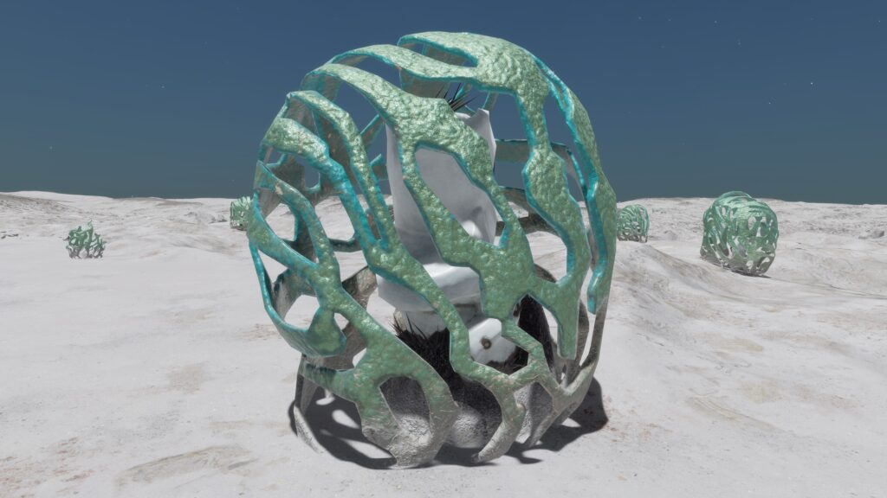
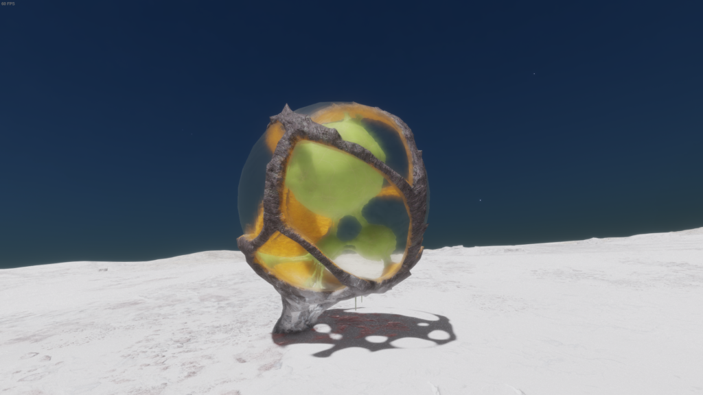
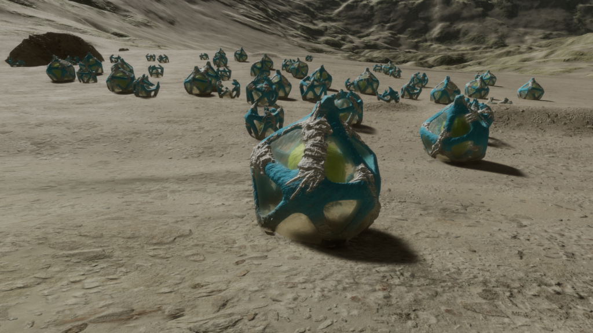

|  |  |  |  |
 |  |  |  |  |
 |  |  |  |  |
 |  |
Exo-skeletal Exo-Biologicals. Recepta Umbrux – Mauve. Image courtesy of Cmdr. Arras DeCairo
Extremophiles that are found primarily on planets with atmospheres dominated by sulphur dioxide. Using a combination of inorganic and hydrocarbon materials, they build a shielding bubble. This allows them to create an isolated biome with regulated temperature and chemical composition. Growth is a difficult and complex process that requires careful melting, regrowing and freezing of the external shell so that the internal organism can develop. This is a gradual process meaning that larger Recepta are of significant age. Reproduction is also similarly complex and revolves around a budding process, which creates a smaller version of the adult. Once detached, it can roll under the action of gravity and air currents before coming to rest, where it will deploy a holdfast marking its final position.
Recepta favour flattish, slightly undulating or gently sloping terrain.
Recepta is one of the Genera with a dual variant determinant. The cross-Species rule for Stellar Class determinant holds true, i.e. Stellar Class X = Variant Colour Y across all Stellar Class determinant Species within the Genus.
For Stellar Class determinant Species in such Genera it is also possible to state generalised planetary body type and atmosphere preferences as these show a relatively limited set of values. The same is not true for the Material determinant Species. These show considerably more differentiation, to the extent that no generalisation will be made but each Material determinant Species treated individually.
Minimum Colonial Separation: 150m
| Species Name | Percentage of recorded Recepta Population | Vista Genomics Offer Price |
|---|---|---|
| Recepta Umbrux | 51.64% | 12,934,900 |
All data as at 30th September 3311.
For the most up-to-date statistics and Vista Genomics pricing, please visit:
Canonn Bioforge or the data-enriched Codex Regions.
Stellar Class and Variant
| Stellar Class | O | B | A | F | G | K | M | L | T | TTS | Ae | Y | W | D | N |
| Variant | In | Tu | Am | Mv | Or | Re | Mr | Oc | Te | Sg | Gy | Li | Ye | Em |
Planetary Body Type: High Metal Content (3%), Icy (46%), Rocky (38%) or Rocky Ice (13%)
Atmosphere: Carbon Dioxide (13%) or Sulphur Dioxide (87%)
Gravity: Less than 0.29G

A Recepta Species that grows a thick latticed structure for protection. A fine translucent membrane stretches between its gaps, allowing sunlight to penetrate and reach the inner organism for photosynthesis.
Planetary Body Type: High Metal Content (3%), Icy (43%), Rocky (37%) or Rocky Ice (17%)
Atmosphere: Carbon Dioxide (13%), Sulphur Dioxide (87%)
Volcanism: Insignificant
Temperature Pressure Gravity
| Minimum | Average | Mode | Maximum | |
| Temperature (K) | 132.00 | 170.00 | 134.17 | 272.66 |
| Pressure (atm) | 0.000986958 | 0.017807510 | 0.001070158 | 0.098575476 |
| Gravity (G) | 0.04 | 0.22 | 0.27 | 0.28 |
Galactic Arm Preference: No Preference
| Species Name | Percentage of recorded Recepta Population | Vista Genomics Offer Price as at 31st March 3310 |
|---|---|---|
| Recepta Conditivus | 30.01% | 14,313,700 |
| Recepta Deltahedronix | 18.35% | 16,202,800 |

A Recepta Species where the body of the organism is suspended above ground inside a sphere-shaped translucent membrane. This is filled with chemical-rich fluid that both protects the organism and provides the chemical soup needed for metabolism. Chemical exchange is controlled actively through the membrane and passively through the extensive root structure.
Material and Variant
| Material | Antimony | Polonium | Ruthenium | Technetium | Tellurium | Yttrium |
| Variant | Lime | White | Yellow | Aquamarine | Cyan | Green |
Planetary Body Type: High Metal Content (1%), Icy (72%), Rocky (15%) or Rocky Ice (12%)
Atmosphere: Carbon Dioxide (4%) and Sulphur Dioxide (96%)
Volcanism: Insignificant
Temperature Pressure Gravity
| Minimum | Average | Mode | Maximum | |
| Temperature (K) | 132.00 | 178.46 | 134.43 | 272.87 |
| Pressure (atm) | 0.000986960 | 0.018284320 | 0.000986960 | 0.098393416 |
| Gravity (G) | 0.04 | 0.23 | 0.23 | 0.28 |
Galactic Arm Preference: No Preference

A Recepta Species that produces a thick lattice of trunks in a deltahedron shape. This grows around and above the globular central organism, and helps to capture, retain and focus geothermal heat for thermosynthesis.
Material and Variant
| Material | Cadmium | Mercury | Molybdenum | Niobium | Tin | Tungsten |
| Variant | Lime | Cyan | Gold | Mulberry | Orange | Red |
Planetary Body Type: High Metal Content (7%), Icy (11%), Rocky (80%) or Rocky Ice (2%)
Atmosphere: Carbon Dioxide (25%) or Sulphur Dioxide (75%)
Volcanism: Low numbers existing on planets with Volcanic activity. Potentially indicates tolerance rather than preference.
Temperature Pressure Gravity
| Minimum | Average | Mode | Maximum | |
| Temperature (K) | 132.00 | 152.36 | 133.69 | 271.78 |
| Pressure (atm) | 0.000986969 | 0.014950007 | 0.000986969 | 0.098419940 |
| Gravity (G) | 0.04 | 0.19 | 0.27 | 0.28 |
Galactic Arm Preference: No Preference
| | | | |
| | | | |
| | | | |
| |